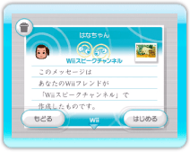
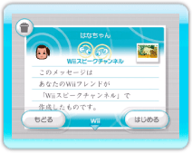

Wiiフレンドに音声つきメッセージを送ることができます。
※写真をつけることもできます。
※会話中にメッセージを作成することはできません。
※音声つきメッセージはWiiスピークやWiiスピークチャンネルを持っていないWiiフレンドにも送ることができます。
1.スピークルームまたはロビーのを選んでください。メッセージ作成画面が表示されます。
2.を押してください。アドレス帳画面が表示されます。
3.送る相手を選びます。 をチェックした後、 「決定」を選んでください。メッセージ作成画面が表示されます。
※一度に送信できる人数は最大で8人です。
4.「Miiをつける」を選び、Miiを選んでください。
※あとから選ぶこともできます。
※Miiをつけなくても送ることができます。
5.音声を録音します。「ここを押して音声を録音」をポイントしてを押してください。
6.録音を開始します。「録音開始」を選び、Wiiスピークに向かって話してください。
※録音時間は10秒です。
※を押すとボイスチェンジをすることができます。
※録音した後に音声を確認することができます。赤で囲んだ部分をポイントしてを押してください。
7.「決定」を選んでください。メッセージ作成画面の音声欄の表示が変わります。
8.「ここを押して写真を貼る」を選び、「写真を見せる（→P.14）」の手順2、3と同じ手順で、写真を選んでください。
9.「決定」を選んでください。メッセージ作成画面の写真欄の表示が変わります。
10.「送る」を選んでください。
※送られたメッセージは、相手に届くまでに時間がかかることがあります。
メッセージが届くと、WiiメニューのWii伝言板ボタンが点滅します。
※Wii本体のWiiConnect24の設定によっては、Wii本体のスロットイルミネーションも点滅します。詳しくは、Wii本体取扱説明書 機能編「Wiiオプション（本体設定）」をご覧ください。
※Wii伝言板のデータがいっぱいになった場合、SDメモリーカードに保存することができます。くわしくは、Wii本体取扱説明書 機能編「Wii伝言板」をご覧ください。
1.WiiメニューのWii伝言板ボタンを選んでください。Wii伝言板画面が表示されます。
2.相手からの音声つきメッセージを選んでください。相手の伝言が再生されます。もう一度伝言を聞く場合は、「もどる」を選んでWii伝言板画面に戻り、再度メッセージを選んでください。「はじめる」を選ぶと、『Wiiスピークチャンネル』が起動し、返信メッセージを作成することができます。
※『Wiiスピークチャンネル』を持っていないWiiフレンドが受け取った場合は、「はじめる」ボタンが「へんじ」ボタンに変わります。
※写真をポイントしてを押すと写真を見ることができます。

 
